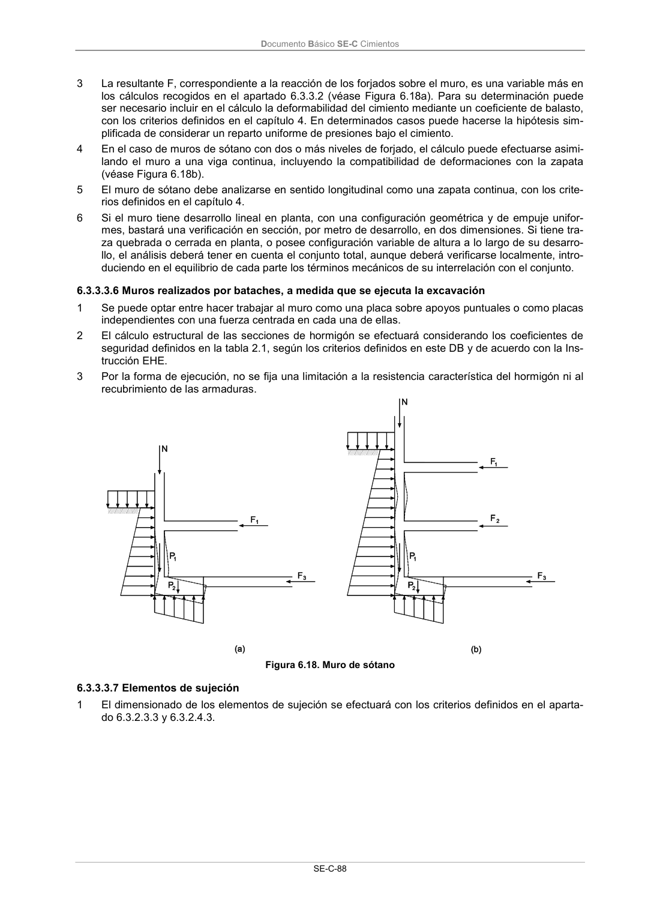

DB-SE-C · 6.3.3.3.6 Muros realizados por bataches, a medida que se ejecuta la excavación · 6.3.3.3.7 Elementos de sujeción · versión 2019-12-20
SHA256: a71133f4b0dca253e45ea3071c70f2a512354bcc5cd841bf89b1a502f567ac5e · página física 93 de 165 · métodos de encabezado
solo si están cotejados.
Formatos: Markdown · JSON de bloques · PDF p. 93 · imagen PNG
Documento Básico SE-C Cimientos SE-C-88 3 La resultante F, correspondiente a la reacción de los forjados sobre el muro, es una variable más en los cálculos recogidos en el apartado 6.3.3.2 (véase Figura 6.18a). Para su determinación puede ser necesario incluir en el cálculo la deformabilidad del cimiento mediante un coeficiente de balasto, con los criterios definidos en el capítulo 4. En determinados casos puede hacerse la hipótesis sim- plificada de considerar un reparto uniforme de presiones bajo el cimiento. 4 En el caso de muros de sótano con dos o más niveles de forjado, el cálculo puede efectuarse asimi- lando el muro a una viga continua, incluyendo la compatibilidad de deformaciones con la zapata (véase Figura 6.18b). 5 El muro de sótano debe analizarse en sentido longitudinal como una zapata continua, con los crite- rios definidos en el capítulo 4. 6 Si el muro tiene desarrollo lineal en planta, con una configuración geométrica y de empuje unifor- mes, bastará una verificación en sección, por metro de desarrollo, en dos dimensiones. Si tiene tra- za quebrada o cerrada en planta, o posee configuración variable de altura a lo largo de su desarro- llo, el análisis deberá tener en cuenta el conjunto total, aunque deberá verificarse localmente, intro- duciendo en el equilibrio de cada parte los términos mecánicos de su interrelación con el conjunto. 6.3.3.3.6 Muros realizados por bataches, a medida que se ejecuta la excavación 1 Se puede optar entre hacer trabajar al muro como una placa sobre apoyos puntuales o como placas independientes con una fuerza centrada en cada una de ellas. 2 El cálculo estructural de las secciones de hormigón se efectuará considerando los coeficientes de seguridad definidos en la tabla 2.1, según los criterios definidos en este DB y de acuerdo con la Ins- trucción EHE. 3 Por la forma de ejecución, no se fija una limitación a la resistencia característica del hormigón ni al recubrimiento de las armaduras. Figura 6.18. Muro de sótano 6.3.3.3.7 Elementos de sujeción 1 El dimensionado de los elementos de sujeción se efectuará con los criterios definidos en el aparta- do 6.3.2.3.3 y 6.3.2.4.3.
